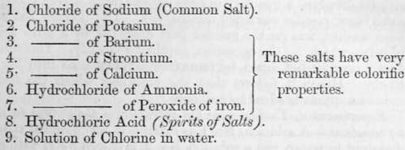

Section II. Chemical Changes On Sensitive Preparations Of Chloride Of Silver
Description
This section is from the book "A Manual Of Photography", by Robert Hunt. Also available from Amazon: A Manual of Photography.
Section II. Chemical Changes On Sensitive Preparations Of Chloride Of Silver
For the formation of the chloride of silver, any of the following salts may be added to a solution of nitrate of silver:—
The above salts are only necessary for the purpose of giving a variety of colour to the artist's productions ; either one of them may be used. This is a point of much interest, as the result of using these different materials as the base determining the tone of the finished picture, enables us to produce effects which are in accordance with the subject which we desire to represent.
A few experiments of an easy character will be instructive, as pointing out the character of those changes which sensitive surfaces undergo.
Experiment 3
Pour some of the solution of common salt into the solution of nitrate of silver ; immediately, a very copious white precipitate takes place. Pour off the supernatant liquor, and well wash it, by the dim light of a candle, with pure distilled water; then expose it to daylight : it will change colour very slowly, passing from white to grey. Drop a little nitrate of silver upon the white precipitate, it will darken much more rapidly than before ; add a little organic matter, and the change occurs still quicker ; and the degree of darkness which it eventually attains will be considerably deeper than before.
In this experiment we prove that, although the white salt of silver changes colour alone, the addition of nitrate of silver and organic matter considerably quickens the operation ; therefore, in preparing the papers, it is always necessary for the nitrate of silver to be in excess.
Scheele, in his " Experiments on Air and Fire," has some experiments which are remarkably to the point. " I precipitated a solution of silver by sal ammoniac; then I edulcorated and dried the precipitate, and exposed it on a piece of paper to the beams of the sun for the space of two weeks, when the surface of the white powder grew black ; after which I stirred the powder, and repeated the same several tunes. Hereupon I poured some caustic spirit of sal ammoniac on this, in all appearance, black powder, and set it by for digestion. This menstruum dissolved a quantity of luna cornua (horn silver), though some black powder remained undissolved. The powder having been washed, was for the greater part dissolved by a pure acid of nitre, which, by the operation, acquired volatility. This solution I precipitated again by means of sal ammoniac into horn silver. Hence it follows that the blackness which the luna cornua acquires is silver by reduction".
Experiment 4. To Determine The Character Of The Change Set Up By Sunshine
A solution, No. 1, is nitric acid and oxide of silver dissolved in water, and a solution, No. 2, is chlorine and sodium. When these solutions are mixed, a white precipitate—chloride of silver—falls. The chlorine of the common salt seizes the silver, and as this is nearly insoluble, it is precipitated : the nitric acid combines at the same time with the soda, and this remains in solution. The chloride of silver being carefully washed, is placed in very pure distilled water, to which a minute portion of organic matter has been added, and then exposed to sunhine. After it has darkened, remove the water, and it will be found to contain chlorine; by adding some nitrate of silver, we shall obtain a fresh precipitate, and we may thus determine exactly the amount of decomposition which has taken place.
In the process, the strong affinity existing has been broken up. Metallic silver, in a state of very fine division, is produced ; and the chlorine set free dissolves in the water, from which we can precipitate it again as chloride of silver, and consequently readily ascertain its quantity.
It is necessary now to direct attention to the effects of organic matter in accelerating the blackening process. Sir John Herschel, whose researches in this branch of science are marked with his usual care, has given particular attention to this matter. As it is impossible to convey the valuable information that Sir John has published, more concisely than in his own language, I shall take the liberty of extracting rather freely from his memoir, published in the Philosophical Transactions.
" A great many experiments were made by precipitating organic liquids, both vegetable and animal, with solutions of lead ; as also, after adding alum, with alkaline solutions. Both alumina and oxide of lead are well-known to have an affinity to many of these fugitive organic compounds which cannot be concentrated by evaporation without injury,—an affinity sufficient to cany them down in combination, when precipitated, either as hydrates or as insoluble salts. Such- precipitates, when collected, were applied, in the state of cream, on paper, and, when dry, were washed with the nitrate. It was here that the first prominently successful result was obtained. The precipitate thrown down from a liquid of this description by lead, was found to give a far higher degree of sensitiveness than any I had before obtained, receiving an equal depth of impression, when exposed, in comparison with mere nitrated paper, in less than a fifth of the time; and, moreover, acquiring a beautiful ruddy brown tint, almost amounting to crimson, with a peculiarly rich and velvety effect. Alumina, similarly precipitated from the same liquid, gave no such result. Struck by this difference, which manifestly referred itself to the precipitate, it now occurred to me to omit the organic matter (whose necessity I had never before thought of questioning), and to operate with an alkaline precipitant on a mere aqueous solution of nitrate of lead, so as to produce simply a hydrate of that metal. The result was instructive. A cream of this hydrate being applied and dried, acquired, when washed with nitrate of silver, a considerable increase of sensitiveness over what the nitrate alone would have given, though less than in the experiment where organized matter was present. The rich crimson hue also acquired in that case under the influence of light, was not now produced. Two peculiarities of action were thus brought into view ; the one, that of the oxide of lead as a mordant (if we may use a term borrowed from the art of dyeing), the other, that of organic matter as a colorific agent.
" Paper washed with acetate of lead was impregnated with various insoluble salts of that metal—such as the sulphate, phosphate, muriate, hydriodate, borate, oxalate—and others, by washing with their appropriate neutral salts, and, when dry, applying the nitrate of silver as usual. The results, however, were in no way striking, as regards sensitiveness, in any case but in that of the muriatic applications. In all cases where such applications were used, a paper was produced infinitely more sensitive than any I had at that time made. And I may here observe, that in this respect the muriate of strontia appeared to have decided advantage".
It would be tedious and useless to mention all the combinations of alkaline and earthy muriates which have been devised to vary the effect, or increase the sensitiveness of the silver preparations : the very considerable differences produced through the influence of these salts will afford peculiarly interesting results to any inquirer, and furnish him with a curious collection of photographic specimens. As a general rule, all the solutions should be made in the combining proportions of the material used. With a scale of chemical equivalents at hand, the photographic experimentalist need not err, taking care that a slight excess of pure nitrate of silver prevails upon his paper or plate.
These changes should be well understood, before the photographic amateurs proceed to the preparation of the sensitive papers employed for the ordinary processes.
Continue to:
- prev: Chapter II. Chemical Changes On Sensitive Preparations. Section I. Nitrate Of Silver
- Table of Contents
- next: Section III. Chemical Changes On Sensitive Preparations Of Iodide Of Silver